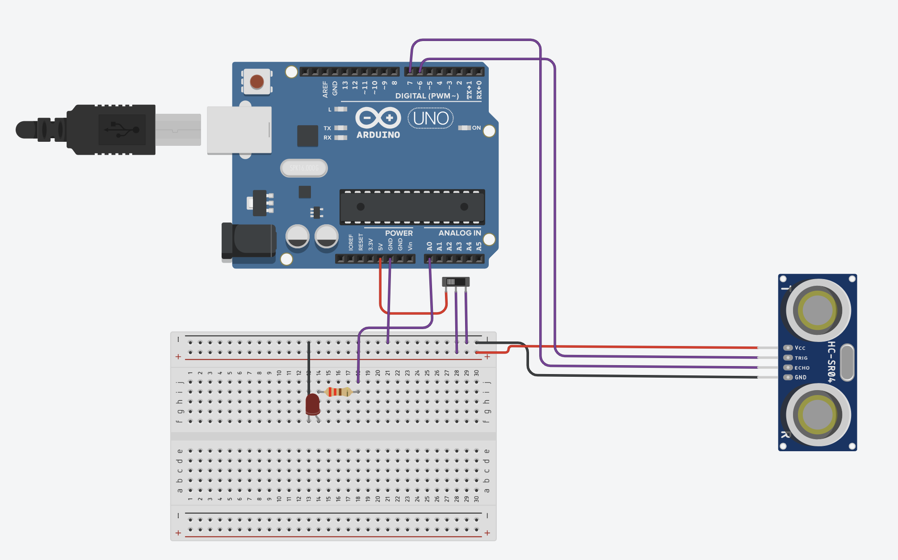
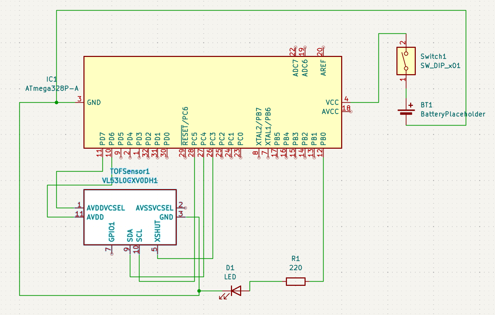

ECE Discovery Project
This is the single-project presentation page. Use this space to present the project as a long-form post: motivation, context, design decisions, and outcomes.
Overview
Dorm closets are dark. I wanted to create a small, circular, portable motion-activated light that can be stuck to the inside of a closet door via adhesive strips, and turn on whenver a ToF sensor is activated.
Implementation Details
I started with a simple breadboard prototype using an ultrasonic sensor, switch, and LED. I eventually switched to a TOF sensor for a smaller footprint and moved toward a PCB design.

Prototype breadboard design

Draft schematic for the PCB
// (Arduino prototype code — moved from index)
int ledPin = A0;
int uTrig = 6;
int uEcho = 7;
long duration;
int distance;
void setup(){
pinMode(LED_BUILTIN, OUTPUT);
pinMode(ledPin, OUTPUT);
pinMode(uTrig, OUTPUT);
pinMode(uEcho, INPUT);
Serial.begin(9600);
}
void loop(){
digitalWrite(uTrig, LOW); delayMicroseconds(2);
digitalWrite(uTrig, HIGH); delayMicroseconds(10); digitalWrite(uTrig, LOW);
duration = pulseIn(uEcho, HIGH);
distance = duration * 0.0343 / 2;
Serial.print("Distance: "); Serial.println(distance);
delay(100);
if(distance == 0) digitalWrite(ledPin, LOW);
else if(distance <= 100) digitalWrite(ledPin, HIGH);
else digitalWrite(ledPin, LOW);
}
Next Steps
Redo the schematic, finalize footprints, and create a round PCB and custom case.
← Back to projects